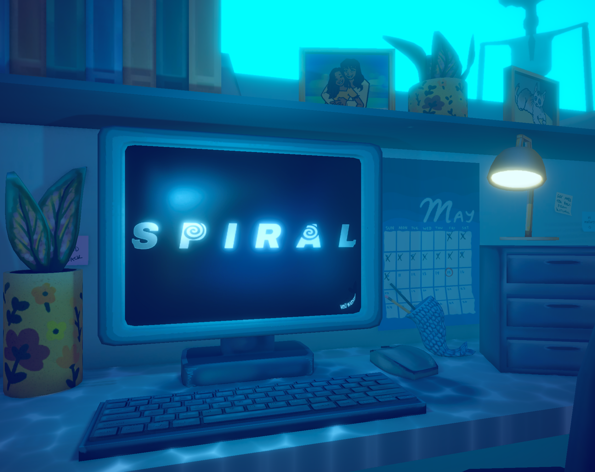
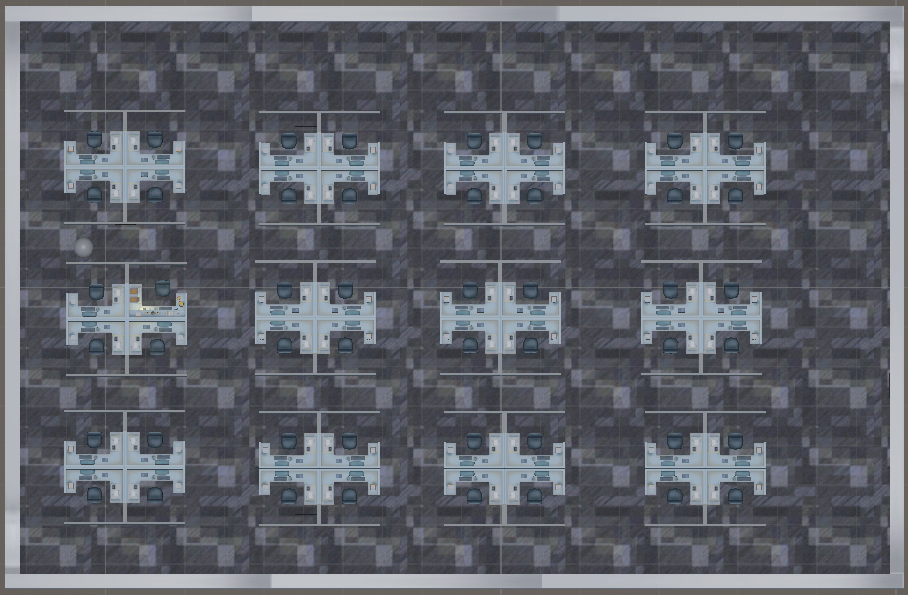
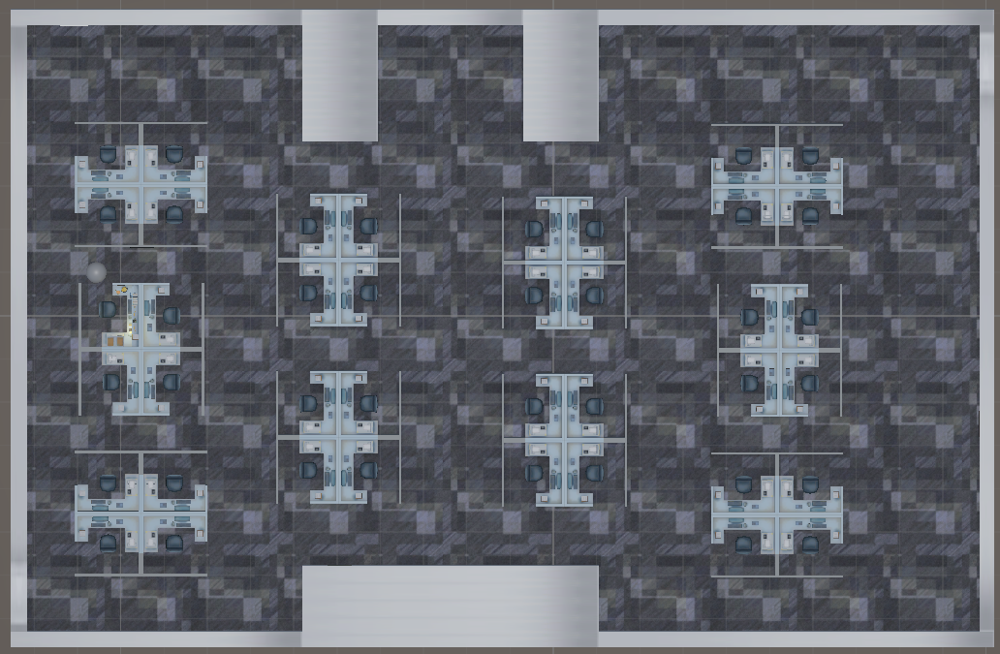
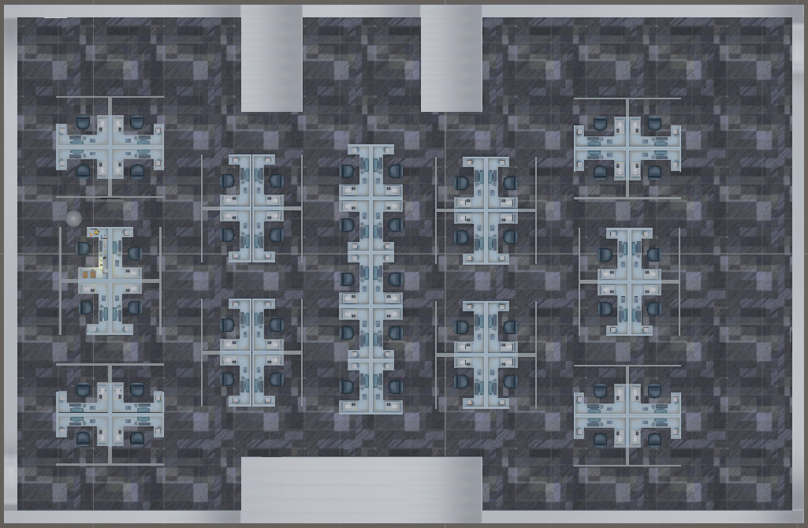
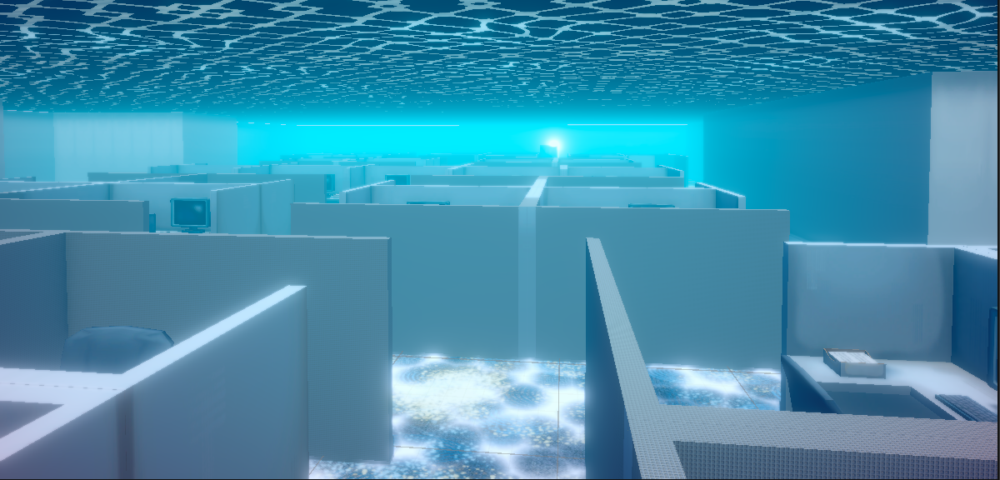
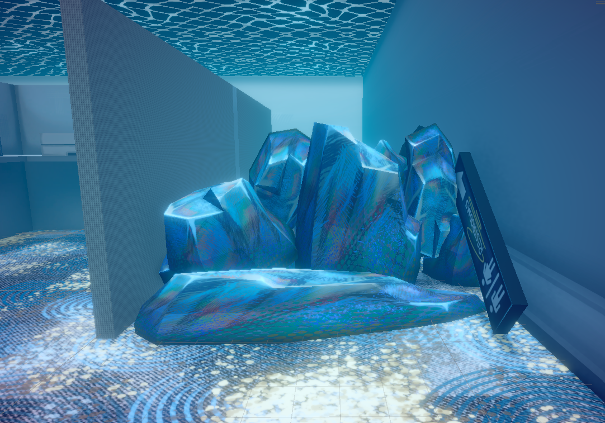
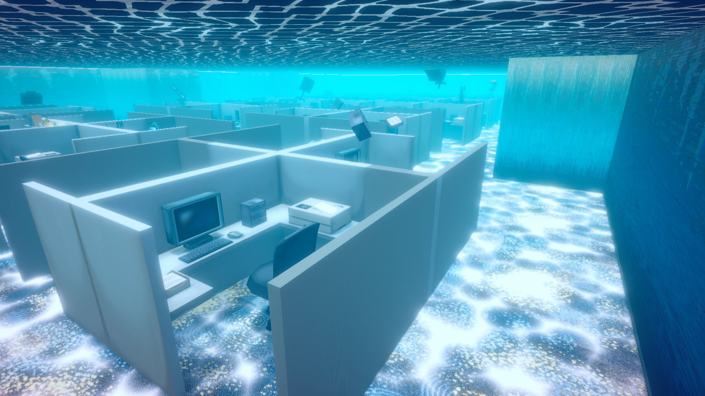

Spiral (Working Title), In Development
Unity, Lead Programmer, Level Designer







What Is This?
A part point and click puzzle game, part first person horror game all about managing one's anxiety and the dangers of overwork and losing sight of your priorities. This game is being developed as part of my Senior Capstone. We plan on releasing the game on Steam at the end of its development, in Spring 2027.
You can find a vertical slice of this game on itch.io here.
What Is My Part?
I am the level designer and programmer in a team of 5, currently working with 1 other programmer.
The Challenges
Initially we had a team of 5, with another programmer. Unfortunately, our other programmer had issues arise and so our producer had to step into a programming role for 6 months of development (recently we have gotten a new programmer on our team).
The Results
As of writing, Spiral is still in development, but, there has already been a lot of work put into the game. In the span of approximately 6 weeks, we were able to take Spiral from concept, to a fleshed out vertical slice, this showed off the game loop, the unique aspects of the game, as well as how the story would be delivered to the player. In these 6 weeks I was largely in charge of the design and code surrounding the primary puzzles the player must solve. In additions to these aspects of gameplay, I also created a tool to aid in the play testing of our level design, a simple script that saves and later displays a tester's path as they try to solve the mazes in our game. This tool allowed for us to easily see where players are getting lost in the level, and better diagnose possible solutions.
Along with programming, I have also been in charge of level design for both the office scenes, as well as the titular spiral (which is meant to come off as a cross between the office and an underwater cave). The struggle here was to make a layout that simultaneously worked as a believable office space, but could also act as a maze for the player to be trapped in (but not be entirely lost), without any major changes to the layout.
To achieve this, I started with creating it as an office space, with clusters of
four cubicles arranged in a 3x4 grid of clusters. Then I began to modify the area bit by bit to act as a maze.
First, I modified the dimensions of the room, adding in a believable narrowing of space in the center, that
would simultaneously give the player less space to escape the monsters chasing them, and work as a realistic
excuse for the next change I made.
Secondly, I took the middle two rows, and removed one cluster from each. Then I offset them so that the
clusters intersected the long pathways of the outer rows. Finally, I rotated the clusters in such a way that
when standing in one of the pathways of the outer rows, looking into the center of the scene, you were just
greeted with a wall, which increased the maze-like feel of the office, as well as making things feel more
claustrophobic.
Thirdly, in an attempt to break up the repetition, serve as a waypoint for the player to orient themselves,
and to further increase the challenge of the spiral, I created a long row of cubicles, that bisected the two
halves of the office, in such a way that the number of paths forward from the office goes 4,3,2,3,4.
After that, I moved specifically to the spiral variation of the layout. Adjusting environmental light & fog to
best give off the underwater feel, and trying to perfectly control how far the player could see. In previous
iterations of the spiral, even when there were literal signs scattered around the level, pointing the player
towards the right direction, play testers expressed confusion in what the goal was, as well as where it was
located. to attempt to better solve this problem, I utilized the lower height of the cubicle walls to add a
light emitting from the goal. The idea was that this could serve as a waypoint for the player to orient
themselves if they got too turned around, as the thought behind the new design was less about the player
feeling lost, and more about trying to evade the enemies throughout the maze. Furthermore, this light also
works as a setup for a future enemy, who will also project a light on the wall, as an angler-fish type design.
Next, to still keep a bit of challenge in navigation, and not letting the player just bee-line straight to the
goal via the outer wall, I created barriers that can randomly be placed around the scene at the start of a
spiral sequence. These barriers will block off two paths, causing the player to need to on the fly determine a
new path through the office.
Finally, I went through the scene, and added spiral specific designs to the scene (of rocks and kelp (the same
assets used to make the barriers)), as well as moving and rotating various elements of different clusters so
as to appear like they were floating in the water. Both of these serve two goals, of making the spiral more
visually interesting, and as elements that may help the player notice if they've gone in circles.
Additionally, I added shaders onto the walls of the office, that slowly morph the textures into the textures of the spiral, to both signify to the player that they are getting closer to the event of entering the spiral, and to make the transition smoother for the player.
More information regarding Spiral will be added here as development continues.